| HealthURL User Tutorial | ||
Purhase Personal MedCommons ProductYou can purchase any of the personal products, which may include Faxin and DICOM credits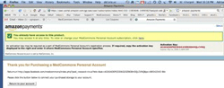 Receive Purchase Confirmation from Amazon PaymentsYou can always view your account in Amazon Payments.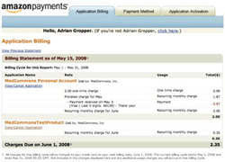 Confirm Your RegistrationYour account has been confirmed and your new password has been saved. You will recieve an email containing a verification link that you can click to verify your email address.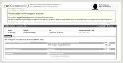 Verify Your Emailget this email with a confirmation link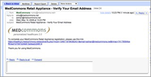 Registration ReceiptPrint the RR as the ultimate proof of account ownership. Notice that the email address shows once it's confirmed.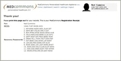 Refresh ConfirmationRefresh the page to see change of status.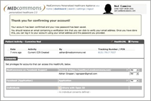 Refreshing facebook apprefreshing facebook app doesn't take away the confirmation nag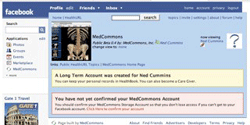 Sign on to New HealthurlClick on the HealthURL symbol to see your new PHRDICOM Data LiberatorUse DDL directly or from Facebook. Separate versions are available for Windows, Linux, an Mac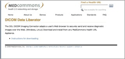 DDL Installation InstructionsSet up DDL in under 10 minutes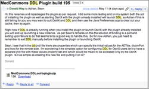 Installing DDL from FacebookReady for you to upload any content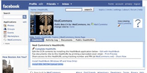 Attach DICOM to the HealthURLAdd DICOM puts this HealthURL in the DDL Pending Box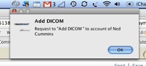 View DDL Directly From OsirixNeeds Elaboration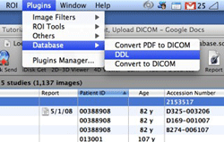 Edit CCR with HealthBookFor Windows Users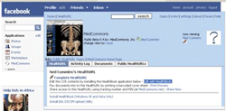 HealthBook Home PageInitial Splash Screen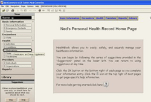 Add Medication and SaveYou can easily add medications or any other fields to your health record.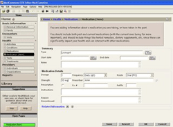 Display Your Records in MedCommons or FacebookWhen viewed in the standard web form, you can quickly see the changes you have made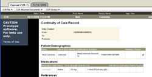 DICOM SamplesNeeds elaborationDDL Confirm ChallengeNeeds elaborationDDL DICOM UploadSelect Upload DICOM Folder After Add DICOM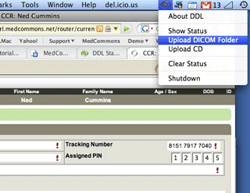 New Upload Job QueuedDDL will announce "New upload job queued" when it's cached the images.Open Show Status in DDL to see the Upload Queue, Click Merge to Pending on the study to be matched to the Pending HealthURL (Ned Cummins in this example) 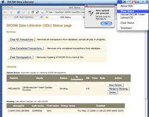 Fax In a DocumentSelect Print Preview on the HealthURL page.Fill in a Document Title to appear in the CCR 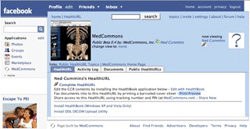 Fax Cover SheetWrite in the number of pages and fax to the toll free number provided.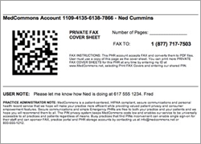 View New Document ThumbnailRefresh the HealthURL to see the new document thumbnail. Click to open the PDF.The red ! is a QC feature. It reminds users to check the correct patient match before clearing it with a click. 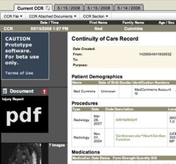 Needs TitleOut of sequence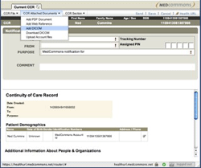 |
| © MedCommons Inc. 2009 | |